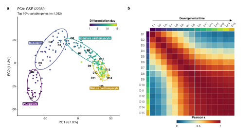
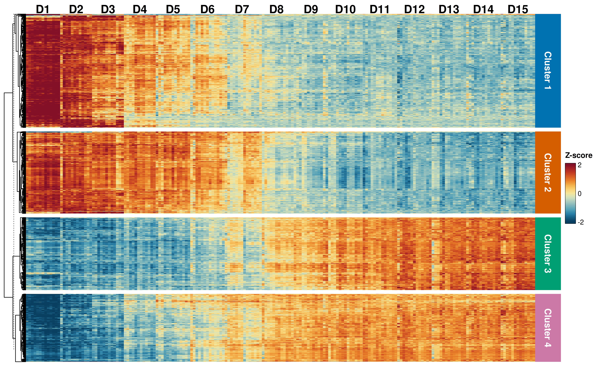
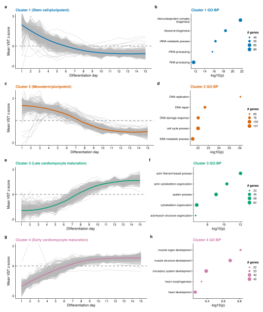
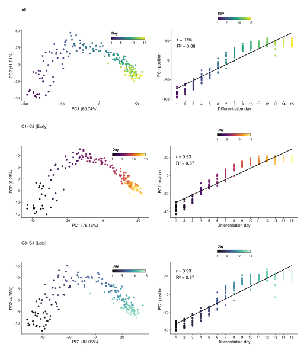
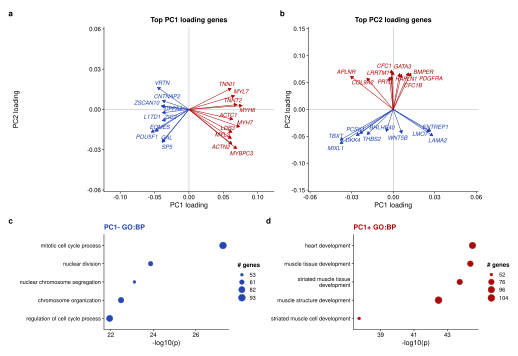
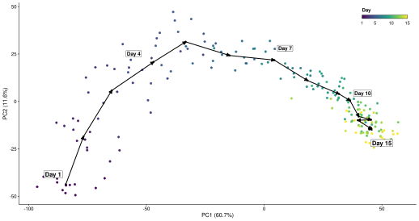
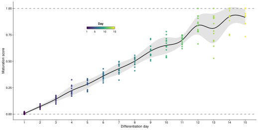
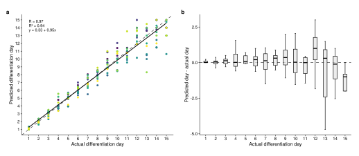
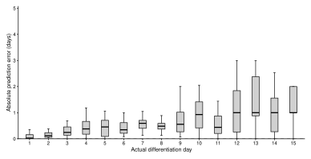

Differentiation timing score
1 Introduction
This tutorial shows a reference-trajectory workflow for scoring differentiation timing from bulk RNA-seq data. The worked example uses processed GSE122380 iPSC-to-cardiomyocyte differentiation samples. The active input contains 192 samples across 15 daily timepoints, from day 1 through day 15, and 13 independent cell lines. The score is trained from the retained reference time course and then expresses each sample as a continuous coordinate along that fitted differentiation trajectory.
The tutorial has four goals:
- define temporal genes from a reference time course
- train a PCA space using those genes
- fit and normalize a differentiation timing polyline
- validate transferability by holding out cell lines
The complete runnable analysis code is stored separately in scripts/01_build_tutorial_objects.R. The report figures are generated by that script as named PNG and SVG files under report/assets/figures/.
2 Download the scoring function
The reusable scoring function is available as a standalone R file. It assumes temporal genes have already been selected, then trains the PCA space, fits the ordered day-centroid polyline, projects samples into that fixed space, and returns polyline timing scores. It does not run DESeq2, select genes, make figures, or write files.
base_url <- "https://raw.githubusercontent.com/ZohebKhan1/pca-maturation-scoring/main/functions"
download.file(
paste0(base_url, "/score_differentiation_timing.R"),
"score_differentiation_timing.R"
)
source("score_differentiation_timing.R")The main parameters are:
expression_matrix: a normalized expression matrix, with genes as rows and samples as columns. The example workflow uses VST expression values.metadata: sample-level metadata. It must contain one row per sample inexpression_matrix.temporal_genes: genes used to train the PCA space and reference trajectory. These should be selected before scoring, for example by the temporal-gene filtering workflow shown below.sample_id_col: metadata column containing sample IDs that matchcolnames(expression_matrix).time_col: numeric differentiation time column used to order the reference centroids.reference_colandreference_values: optional metadata column and value set used to define the reference samples. If these are omitted, all samples are treated as reference samples.n_pcs: number of retained PCs used for the centroid polyline and projection. The tutorial uses the first three PCs.
The function returns a list containing scores, pca_coordinates, the fitted pca_fit, the fitted centroid_polyline, the retained temporal_genes, and the normalized reference time range.
3 GSE122380 bulk RNA-seq time-course dataset
The example uses GSE122380, an iPSC-derived cardiomyocyte differentiation bulk RNA-seq time course generated by Strober, Elorbany, Rhodes et al. The data used here have already been processed into aligned metadata, raw-count, and variance-stabilized expression objects. There are no perturbation samples in the active tutorial dataset; all retained samples are treated as one reference trajectory.
| Metric | D1 | D2 | D3 | D4 | D5 | D6 | D7 | D8 | D9 | D10 | D11 | D12 | D13 | D14 | D15 |
|---|---|---|---|---|---|---|---|---|---|---|---|---|---|---|---|
| Samples | 13 | 12 | 12 | 12 | 13 | 13 | 13 | 13 | 13 | 13 | 13 | 13 | 13 | 13 | 13 |
| Cell lines | 13 | 12 | 12 | 12 | 13 | 13 | 13 | 13 | 13 | 13 | 13 | 13 | 13 | 13 | 13 |
The figure below provides a compact overview of the reference time course. Panel a shows the global time-course structure by PCA, and panel b shows the day-collapsed Pearson correlation matrix using the same top-variable-gene set.

4 Method
The differentiation timing score reduces a multi-gene time course to a one-dimensional coordinate. The calculation has four defined steps: select temporal genes, train a PCA space, fit an ordered day-centroid polyline, and score samples by the nearest position along that polyline. The equations below are limited to those operations.
Step 1. Select temporal genes. Genes are retained only if they pass all three temporal-feature filters: day-level expression support, DESeq2 LRT evidence, and day-mean VST dynamic range. This avoids training the trajectory on genes that are statistically non-temporal, too lowly expressed, or numerically flat across the time course. For each gene, DESeq2 compares a full model that includes differentiation day against a reduced model without day:
\[ \mathrm{full}: y \sim \mathrm{cell\ line} + \mathrm{day}, \qquad \mathrm{reduced}: y \sim \mathrm{cell\ line}. \tag{1} \]
The likelihood-ratio statistic is
\[ \mathrm{LR} = -2\ln\left(\frac{L_{\mathrm{reduced}}}{L_{\mathrm{full}}}\right) = 2\left(\ell_{\mathrm{full}} - \ell_{\mathrm{reduced}}\right), \tag{2} \]
where \(L\) is the maximized likelihood and \(\ell\) is the maximized log-likelihood for the corresponding fit. Genes with small adjusted LRT p-values have evidence that expression changes across differentiation day after accounting for cell-line structure.
Step 2. Train the PCA coordinate system. Let \(X \in \mathbb{R}^{n \times p}\) be the reference expression matrix for \(n\) samples and \(p\) selected temporal genes. PCA is trained after centering each gene. If \(\mathbf{x}_i\) is the row vector for sample \(i\), \(\boldsymbol{\mu}\) is the reference gene-mean vector, and \(W_k \in \mathbb{R}^{p \times k}\) contains the retained PCA loading vectors, then the retained PCA coordinate is
\[ \mathbf{z}_i = (\mathbf{x}_i - \boldsymbol{\mu}) W_k. \tag{3} \]
Below, PCA coordinates are treated as points in the retained Euclidean PC space. Inner products are written with angle brackets so the projection formulas do not depend on whether a vector is stored as a row or column in software.
Step 3. Fit the day-centroid polyline. For each ordered differentiation day \(t_j\), let \(I_j\) be the samples collected at that day. The day centroid is the mean PCA coordinate:
\[ \mathbf{c}_j = \frac{1}{|I_j|} \sum_{i \in I_j} \mathbf{z}_i, \qquad j = 1,\ldots,m. \tag{4} \]
The ordered centroids \(\mathbf{c}_1,\ldots,\mathbf{c}_m\) define a piecewise-linear trajectory. Segment \(j\) starts at \(\mathbf{a}_j=\mathbf{c}_j\), ends at \(\mathbf{b}_j=\mathbf{c}_{j+1}\), and has direction \(\mathbf{v}_j=\mathbf{b}_j-\mathbf{a}_j\).
This scoring method assumes consecutive day centroids are distinct; a degenerate segment with \(\mathbf{v}_j=\mathbf{0}\) would be dropped before projection. It also assumes the ordered day centroids define a roughly monotonic differentiation trajectory in the retained PC space. If the trajectory folds back on itself, nearest-segment projection can assign a sample to an out-of-order part of the polyline.
Step 4. Project and score each sample. For sample \(i\) and segment \(j\), the fractional position along that segment is
\[ \alpha_{ij} = \operatorname{clip}_{[0,1]} \left( \frac{\langle \mathbf{z}_i-\mathbf{a}_j, \mathbf{v}_j \rangle} {\langle \mathbf{v}_j, \mathbf{v}_j \rangle} \right). \tag{5} \]
The clipped value \(\alpha_{ij}\) keeps the projection on the finite segment rather than on the infinite line through that segment. The projected point on segment \(j\) is
\[ \mathbf{q}_{ij} = \mathbf{a}_j + \alpha_{ij}\mathbf{v}_j. \tag{6} \]
The selected segment is the one whose projected point is closest to the sample in retained PC space:
\[ j^\ast = \underset{j}{\operatorname{argmin}} \left\lVert \mathbf{z}_i - \mathbf{q}_{ij} \right\rVert^2. \tag{7} \]
The segment fraction is then converted to an interpolated differentiation day:
\[ \widehat{t}_i = t_{j^\ast} + \alpha_{ij^\ast} \left(t_{j^\ast+1} - t_{j^\ast}\right). \tag{8} \]
Finally, the timing score is normalized to the fitted reference interval:
\[ s_i = \frac{\widehat{t}_i - t_{\mathrm{start}}}{t_{\mathrm{end}} - t_{\mathrm{start}}}. \tag{9} \]
In this tutorial \(t_{\mathrm{start}}=1\) and \(t_{\mathrm{end}}=15\), so the day 1 centroid anchors score 0 and the day 15 centroid anchors score 1. Scores below 0 or above 1 are allowed for future projection datasets if a sample maps before or after the fitted reference interval.
5 Computing the differentiation timing score
5.1 Identify time-variant genes
The LRT compares a full model with cell line and day against a reduced model with cell line only, but the final temporal gene set also requires expression support and VST-scale dynamic range. A gene is retained if its maximum day-level mean TMM CPM is at least 10, its LRT-adjusted p-value is below 1e-7, and the difference between its maximum and minimum day-level mean VST values is at least 0.6.
day_mean_tmm_cpm <- mean_tmm_cpm_by_day(
count_matrix = counts,
metadata_df = meta,
day_values = days
)
max_day_mean_tmm_cpm <- apply(day_mean_tmm_cpm, 1, max, na.rm = TRUE)
expression_genes <- names(max_day_mean_tmm_cpm)[
max_day_mean_tmm_cpm >= 10
]
dds <- DESeq2::DESeqDataSetFromMatrix(
countData = counts[expression_genes, , drop = FALSE],
colData = lrt_meta,
design = ~ cell_line + day_factor
)
dds <- DESeq2::DESeq(dds, test = "LRT", reduced = ~cell_line, quiet = TRUE)
lrt_res <- as.data.frame(DESeq2::results(dds, alpha = 1e-7))
lrt_genes <- rownames(lrt_res)[!is.na(lrt_res$padj) & lrt_res$padj < 1e-7]
day_mean_vst <- mean_vst_by_day(vst[lrt_genes, , drop = FALSE], meta, days)
vst_dynamic_range <- apply(day_mean_vst, 1, function(x) max(x) - min(x))
temporal_genes <- lrt_genes[vst_dynamic_range[lrt_genes] >= 0.6]| Metric | Value |
|---|---|
| Genes in filtered count/VST input | 13,615 |
| Genes with max day mean TMM CPM >= 10 | 11,411 |
| Genes tested by DESeq2 LRT | 11,411 |
| Genes passing LRT padj < 1e-7 | 10,863 |
| Genes passing VST dynamic range >= 0.6 | 8,215 |
| Temporal genes used for PCA/scoring | 8,215 |
| Temporal clusters shown | 4 |
The heatmap shows the top 1,500 genes from the final temporal set to keep the visualization readable. PCA fitting, scoring, and validation use the full final temporal set.

The cluster panel uses k=4 only for interpretation. Clusters, trajectory summaries, and GO enrichment are all computed from the same top 1,500 temporally variable genes shown in the heatmap.

5.2 Train PCA space on the reference time course
The PCA space is trained using the final temporal gene set. PC1 is oriented so that it increases with differentiation day. The figure also shows two interpretive subsets from the k=4 heatmap clusters: C1+C2 captures the earlier temporal cluster patterns, and C3+C4 captures the later temporal cluster patterns.
pca_input <- t(vst[temporal_genes, , drop = FALSE])
pca_fit <- prcomp(pca_input, center = TRUE, scale. = FALSE)
pca_fit <- orient_pca_fit_by_day(pca_fit, sample_days)
pca_df <- data.frame(
sample_id = rownames(pca_fit$x),
PC1 = pca_fit$x[, 1],
PC2 = pca_fit$x[, 2],
PC3 = pca_fit$x[, 3],
meta[match(rownames(pca_fit$x), meta$sample_id), ],
row.names = NULL
)
The loading validation figure shows the top 10 negative and top 10 positive PC1 loading genes and PC2 loading genes as vectors in PC1/PC2 loading space, then summarizes GO biological process enrichment for the top 500 genes in each PC1 direction.

5.3 Fit the differentiation timing polyline
After the PCA space is defined, day-level centroids are connected into an ordered polyline. This preserves curvature in the reference trajectory instead of forcing the full time course onto one straight D1-to-D15 vector. The same piecewise-linear centroid polyline shown in the figure is used for scoring.
centroid_polyline <- calculate_centroid_polyline(
fit_pca_df = pca_df,
pc_columns = c("PC1", "PC2", "PC3")
)
polyline_projection <- project_points_to_polyline(
points_df = pca_df,
polyline_df = centroid_polyline,
pc_columns = c("PC1", "PC2", "PC3")
)
5.4 Score samples along the fixed polyline
This tutorial projects the retained reference samples back into the trained space to show the expected scoring behavior. In a perturbation or genotype comparison, non-reference samples would be projected into this already-trained PCA space and scored against the same fixed centroid polyline.
pca_df$maturation_score <- polyline_projection$maturation_score
pca_df$polyline_day <- polyline_projection$polyline_day
pca_df$polyline_segment_start_day <- polyline_projection$segment_start_day
pca_df$polyline_segment_end_day <- polyline_projection$segment_end_day
pca_df$polyline_segment_fraction <- polyline_projection$segment_fraction
pca_df$polyline_squared_distance <- polyline_projection$squared_distance
6 Leave-one-line-out validation
The validation repeats the workflow while holding out one cell line at a time. For each held-out line, temporal genes are reidentified from the remaining reference lines using the same CPM, LRT, and VST dynamic-range filters; PCA and the centroid polyline are trained on those remaining samples; and the held-out samples are projected into that trained space. The panel grid excludes held-out line 19190 only for display so the validation figure fits a 3-row by 4-column layout.
| metric | value |
|---|---|
| Held-out cell lines | 13 |
| Held-out samples | 192 |
| Correlation between actual and predicted day | 0.971 |
| R-squared | 0.942 |
| Mean absolute error | 0.70 days |
| Median absolute error | 0.46 days |
| Predictions within 1 day | 79.7% |
| Predictions within 2 days | 94.8% |



7 References
- 1. Love MI, Huber W, Anders S. Moderated estimation of fold change and dispersion for RNA-seq data with DESeq2. Genome Biology. 2014;15:550.
- 2. Strober BJ, Elorbany R, Rhodes K, et al. Dynamic genetic regulation of gene expression during cellular differentiation. Science. 2019;364:1287-1290.
- 3. Xie Y. bookdown: Authoring Books and Technical Documents with R Markdown. 2016.
8 Session Info
## R version 4.6.0 (2026-04-24)
## Platform: x86_64-pc-linux-gnu
## Running under: Ubuntu 24.04.4 LTS
##
## Matrix products: default
## BLAS: /usr/lib/x86_64-linux-gnu/blas/libblas.so.3.12.0
## LAPACK: /usr/lib/x86_64-linux-gnu/lapack/liblapack.so.3.12.0 LAPACK version 3.12.0
##
## locale:
## [1] LC_CTYPE=C.UTF-8 LC_NUMERIC=C LC_TIME=C.UTF-8
## [4] LC_COLLATE=C.UTF-8 LC_MONETARY=C.UTF-8 LC_MESSAGES=C.UTF-8
## [7] LC_PAPER=C.UTF-8 LC_NAME=C LC_ADDRESS=C
## [10] LC_TELEPHONE=C LC_MEASUREMENT=C.UTF-8 LC_IDENTIFICATION=C
##
## time zone: America/Chicago
## tzcode source: system (glibc)
##
## attached base packages:
## [1] stats graphics grDevices utils datasets methods base
##
## loaded via a namespace (and not attached):
## [1] RColorBrewer_1.1-3 rstudioapi_0.18.0
## [3] jsonlite_2.0.0 shape_1.4.6.1
## [5] tidydr_0.0.6 magrittr_2.0.5
## [7] magick_2.9.1 ggtangle_0.1.2
## [9] farver_2.1.2 rmarkdown_2.31
## [11] ragg_1.5.2 GlobalOptions_0.1.4
## [13] fs_2.1.0 vctrs_0.7.3
## [15] Cairo_1.7-0 memoise_2.0.1
## [17] ggtree_4.2.0 base64enc_0.1-6
## [19] htmltools_0.5.9 S4Arrays_1.12.0
## [21] SparseArray_1.12.2 gridGraphics_0.5-1
## [23] sass_0.4.10 bslib_0.11.0
## [25] htmlwidgets_1.6.4 plyr_1.8.9
## [27] httr2_1.2.2 cachem_1.1.0
## [29] igraph_2.3.2 lifecycle_1.0.5
## [31] iterators_1.0.14 pkgconfig_2.0.3
## [33] gson_0.1.0 Matrix_1.7-5
## [35] R6_2.6.1 fastmap_1.2.0
## [37] MatrixGenerics_1.24.0 clue_0.3-68
## [39] digest_0.6.39 aplot_0.2.9
## [41] enrichplot_1.32.0 colorspace_2.1-2
## [43] ggnewscale_0.5.2 patchwork_1.3.2
## [45] AnnotationDbi_1.74.0 S4Vectors_0.50.1
## [47] aisdk_1.4.12 ps_1.9.3
## [49] DESeq2_1.52.0 textshaping_1.0.5
## [51] GenomicRanges_1.64.0 RSQLite_3.53.1
## [53] org.Hs.eg.db_3.23.1 labeling_0.4.3
## [55] mgcv_1.9-4 polyclip_1.10-7
## [57] httr_1.4.8 abind_1.4-8
## [59] compiler_4.6.0 withr_3.0.2
## [61] bit64_4.8.2 fontquiver_0.2.1
## [63] doParallel_1.0.17 S7_0.2.2
## [65] BiocParallel_1.46.0 viridis_0.6.5
## [67] DBI_1.3.0 ggforce_0.5.0
## [69] MASS_7.3-65 rappdirs_0.3.4
## [71] DelayedArray_0.38.2 rjson_0.2.23
## [73] tools_4.6.0 otel_0.2.0
## [75] scatterpie_0.2.6 ape_5.8-1
## [77] glue_1.8.1 callr_3.8.0
## [79] nlme_3.1-169 GOSemSim_2.38.0
## [81] grid_4.6.0 cluster_2.1.8.2
## [83] reshape2_1.4.5 generics_0.1.4
## [85] gtable_0.3.6 tidyr_1.3.2
## [87] XVector_0.52.0 BiocGenerics_0.58.1
## [89] ggrepel_0.9.8 foreach_1.5.2
## [91] pillar_1.11.1 stringr_1.6.0
## [93] limma_3.68.4 yulab.utils_0.2.4
## [95] splines_4.6.0 circlize_0.4.18
## [97] tweenr_2.0.3 dplyr_1.2.1
## [99] treeio_1.36.1 lattice_0.22-9
## [101] bit_4.6.0 tidyselect_1.2.1
## [103] fontLiberation_0.1.0 GO.db_3.23.1
## [105] ComplexHeatmap_2.28.0 locfit_1.5-9.12
## [107] Biostrings_2.80.1 knitr_1.51
## [109] gridExtra_2.3 fontBitstreamVera_0.1.1
## [111] bookdown_0.46 IRanges_2.46.0
## [113] Seqinfo_1.2.0 edgeR_4.10.1
## [115] SummarizedExperiment_1.42.0 svglite_2.2.2
## [117] stats4_4.6.0 xfun_0.58
## [119] Biobase_2.72.0 statmod_1.5.2
## [121] matrixStats_1.5.0 stringi_1.8.7
## [123] lazyeval_0.2.3 ggfun_0.2.0
## [125] yaml_2.3.12 evaluate_1.0.5
## [127] codetools_0.2-20 qvalue_2.44.0
## [129] gdtools_0.5.1 tibble_3.3.1
## [131] BiocManager_1.30.27 ggplotify_0.1.3
## [133] cli_3.6.6 systemfonts_1.3.2
## [135] processx_3.9.0 jquerylib_0.1.4
## [137] dichromat_2.0-0.1 Rcpp_1.1.1-1.1
## [139] png_0.1-9 parallel_4.6.0
## [141] ggplot2_4.0.3 blob_1.3.0
## [143] clusterProfiler_4.20.0 DOSE_4.6.0
## [145] viridisLite_0.4.3 tidytree_0.4.7
## [147] ggiraph_0.9.6 enrichit_0.1.4
## [149] scales_1.4.0 purrr_1.2.2
## [151] crayon_1.5.3 GetoptLong_1.1.1
## [153] rlang_1.2.0 KEGGREST_1.52.0